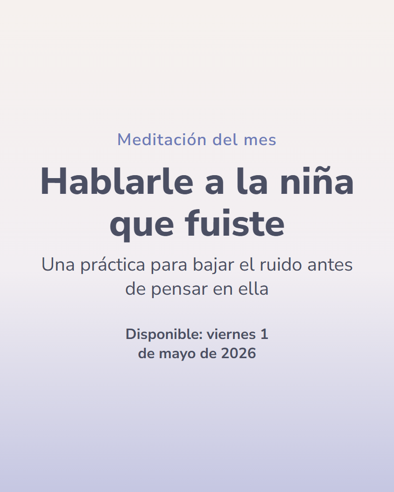
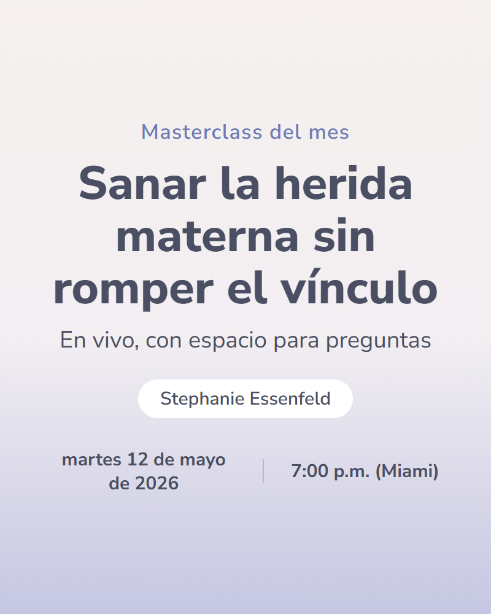

Hay una frase que he escuchado incontables veces cuando alguien habla de su familia. |
"Mi relación más complicada es con mi mamá." |
Casi nunca llega con rabia, {{contact.first_name}}. |
Llega en voz baja, con culpa, y con una disculpa pegada atrás: "pero yo la amo, ¿eh?". |
Quizás tú la pensaste alguna vez y nunca la dijiste: |
🟣 "Cuelgo el teléfono con un peso que no sé nombrar."
🟣 "Le pedí algo con cariño y lo tomó como un rechazo."
🟣 "Vuelvo a sentirme de doce años cada vez que me habla así."
🟣 "Hay cosas que nunca le he podido decir." |
Y debajo de todas, la misma duda. |
¿Se puede amar muchísimo a tu mamá y, al mismo tiempo, haber salido lastimada de esa relación? |
Sí. |
Yo amo profundamente a mi mamá, y al mismo tiempo había cosas que ella hacía, sin darse cuenta y sin mala intención, que me dolían mucho. |
Durante años no supe cómo decírselo. |
En mi familia, un límite de un hij@ hacia su mamá no se leía como cuidado ni como amor: se sentía como distancia, como irrespeto, como ser malagradecida. |
Así que me callaba. |
Y el dolor no se fue por eso. |
Nada desaparece solo porque nadie lo nombra. |
A eso que se queda ahí, sin decir, le llamamos herida materna: |
lo que no se pudo hablar con tu mamá y hoy sigue decidiendo cómo pides, cómo callas y cuánto te atreves a necesitar. |
Sanarla es posible, y quiero ser honesta contigo: toma tiempo y no avanza en línea recta. |
Es un camino largo, con conversaciones incómodas, intentos fallidos y malentendidos. |
También es liberador. |
Por eso, este mes en la Comunidad Más Paz Mental vamos a trabajar: |
✨ Sanar la herida materna |
Para que puedas querer a tu mamá sin abandonarte a ti. |
|
 | Meditación del mes: Hablarle a la niña que fuiste
📆 Disponible: viernes 1 de mayo de 2026
Una práctica para bajar el ruido antes de pensar en ella, calmar el cuerpo y acercarte a lo que todavía duele sin pelearte contigo. |
|
 | Masterclass: Sanar la herida materna sin romper el vínculo
📆 En vivo: martes 12 de mayo de 2026 · 7:00 p.m. (Miami)
Una clase en vivo para entender de dónde viene lo que se repite con tu mamá, nombrar lo que necesitas y aprender a pedirlo sin culpa y sin ataque. |
|
|
Este mes también tenemos catarsis en vivo con Andrea González: Límites con mamá sin culpa. |
📆 miércoles 20 de mayo de 2026 · 12:00 p.m. (Miami)
📆 jueves 28 de mayo de 2026 · 7:00 p.m. (Miami) |
Nuestro espacio para decir en voz alta eso que te pesa de esta relación, hacer las preguntas que no te atreves a hacer en casa y llevarte una mirada profesional sobre lo que estás viviendo. |
|
|
Esta relación no se ordena en una tarde. |
Y tampoco hace falta ordenarla sola: la Comunidad Más Paz Mental es el espacio que creé para acompañar procesos como este, mes a mes, con herramientas que puedes usar en tu día a día y con personas que están revisando algo parecido. |
Es un espacio psicoeducacional, con acompañamiento profesional, y no un proceso de terapia individual. |
Aquí podrás: |
→ Bajar el ruido con las meditaciones del mes, para esos días en que la cabeza no para después de una llamada.
→ Aprender la herramienta en las masterclasses en vivo, con ejemplos de conversaciones reales.
→ Hablar de lo tuyo en las catarsis con especialistas y recibir una mirada profesional sobre tu caso.
→ Dejar de cargarlo sola, acompañada de personas que están revisando la misma relación que tú. |
🎁 Puedes empezar con 7 días gratis y vivirlo desde dentro. |
Y si sientes que es tu lugar, te quedas por $28 USD al mes. |
|
Querer a tu mamá y cuidarte a ti caben en la misma vida. |
Nos vemos dentro,
Steph |